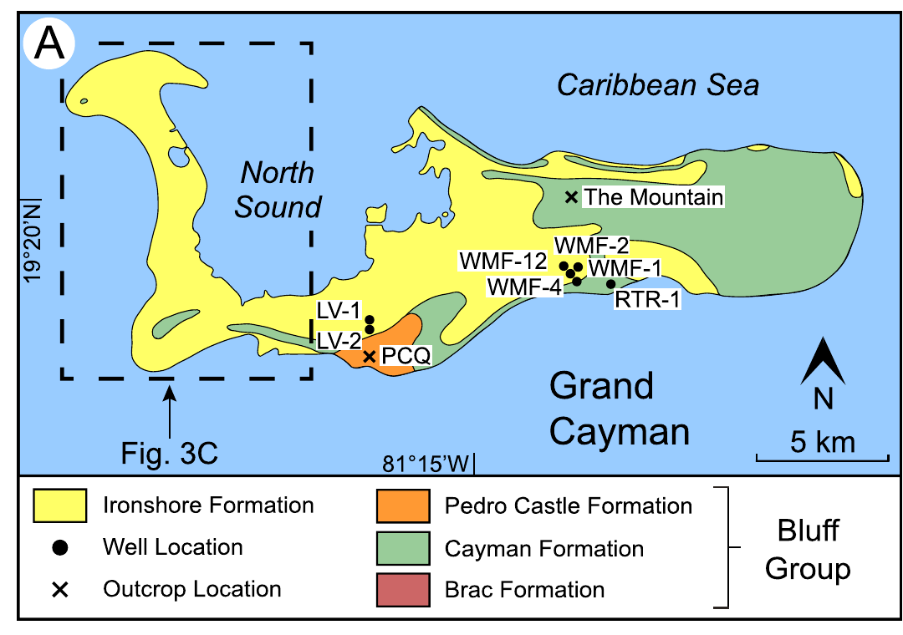
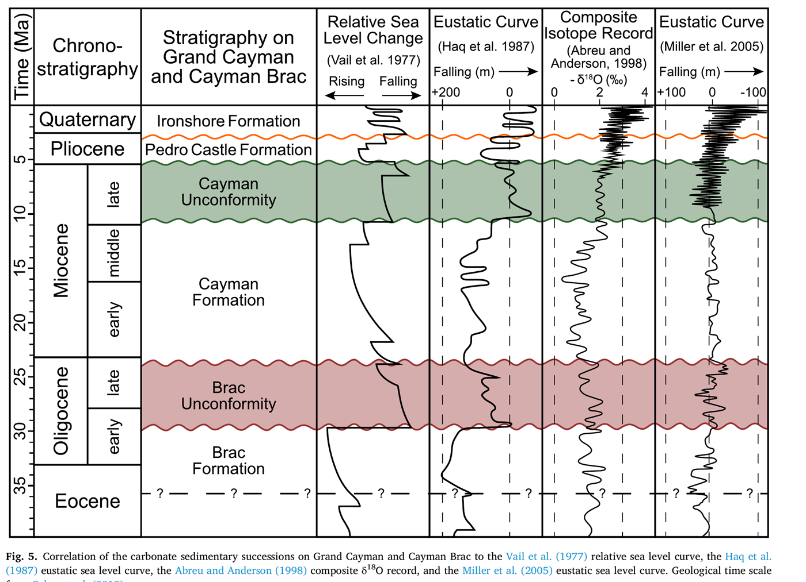

Cenozoic Island Dolostones
What isolated carbonate islands like Grand Cayman can tell us about sea level, subsidence, and near-surface dolomitization — without a drop of hydrothermal fluid.
Overview
Small, isolated carbonate platforms such as Grand Cayman and Cayman Brac (British West Indies) grow close to sea level and are highly sensitive to changes in sea level and subsidence, making their Paleogene–Neogene stratigraphy a natural “dipstick” for reconstructing regional subsidence history. My M.Sc. research (University of Alberta, with Dr. Brian Jones) evaluated how well this stratigraphic-dipstick approach actually works, and where it breaks down, using the Cayman Islands as a case study.
That same setting also hosts extensively dolomitized “island dolostones,” and a second, ongoing line of this research uses carbonate clumped isotopes (Δ47) and trace-element proxies (cerium anomalies, uranium isotopes) to show that this dolomitization was driven by seawater modified at the Earth's surface — evaporated and reflux-circulated through the platform — rather than by deep hydrothermal fluids. Together, these studies use one island system to connect sea-level history, fluid flow, and diagenesis in shallow carbonate platforms.
Key Figures

